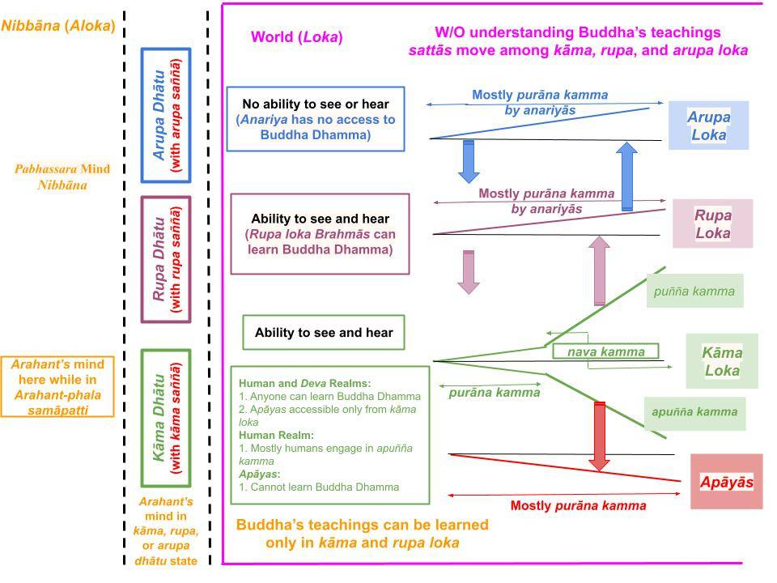

Sotapanna stage is reached by removing sakkāya diṭṭhi, the wrong view that only "sensory pleasures" can overcome suffering. To do that, one must learn Buddha's worldview from a disciple of the Buddha.
February 23, 2025

Download/Print: "Loka and Aloka - Totally Separated"
The Broad Overview
1. A simple representation of the world and Nibbāna (removed from the world) is shown in the above chart. Let us discuss the necessary features. Of course, one must get rid of uccheda and sassata diṭṭhi first, as discussed in the previous post, "Path to Nibbāna – The Necessary Background."
- One must learn Buddha's teachings from a Buddha or a disciple who has attained a magga phala, i.e., at least the Sotapanna stage. We have two sense faculties used for learning: listening and reading. Either or both can be used.
- Both those sense faculties are absent in arupa loka (those Brahmās have only the mind). Thus, unless they had attained at least the Sotapanna stage in a previous life, they cannot learn anything about Buddha's teachings.
- Those in the four lowest realms (apāyās) also cannot learn Buddha Dhamma because their minds don't generate "ñāna sampayutta citta" per Abhidhamma, i.e., they don't have the wisdom to grasp the teachings.
- Therefore, only those in the human, Deva, and rupa loka realms can learn Buddha Dhamma and attain a magga phala.
- A given sattā (any living being with no magga phala; a "puthujjana" if in the human realm) moves up and down among the realms endlessly (most time spent in the apāyās) until grasping Buddha Dhamma and attaining Nibbāna.
- Suffering does not end until one is fully separated from the world (on the right side) and moves to the left-most region. That happens for the first time at the Arahant-phala moment. Then, until the death of the physical body, Arahant's mind is mostly in the middle region; see below. Until the death of the physical body of an Arahant, a mind must be in one of the three regions in the above chart; at the death of the physical body of an Arahant, the mind will disappear from the chart; that is the end of suffering.
A Mind Must be in One of the Three Regions
2. Attaining the highest magga phala (Arahanthood) means separation from the world of 31 realms in the three lokās: kāma, rupa, and arupa loka. See "Loka and Nibbāna (Aloka) – Complete Overview."
- However, an Arahant must live in this world until the physical body's death. Upon death, he/she will not be reborn in any of the 31 realms within the three lokās.
- Yet, the mind of a living Arahant will never get inside the "world boundary" marked by the "pink box" in the above chart. (Any mind anywhere within the "pink box" or the "world" inevitably generates thoughts of rāga, dosa, or at least moha.)
- Until death, the mind of an Arahant stays in one of three "dhātu" states ("here, dhātu means the "landing state" for any thought). During normal daily life it is the "kāma dhātu" for an Arahant born in kāma loka. If the Arahant can get into a jhāna (mindset of rupa loka Brahmās), their minds will be in rupa dhātu. If the Arahant can get into an arupa samāpatti (the mindset of arupa loka Brahmās), their minds will be in arupa dhātu.
- The mind of a sattā also lands first in a dhātu stage (for example, the mind of a puthujjana lands in "kāma dhātu" and that of an anariya rupa loka Brhama lands in the "kāma dhātu"), but immediately transitions to inside of the "pink box" or the "world." Thus, a sattā's mind will ALWAYS be inside the "pink box."
Difference Between the Two Regions on the Left in the Chart
3. As we have discussed, any mind in a dhātu stage would have the corresponding "distorted saññā": "kāma saññā" in kāma loka, "rupa (jhāna) saññā" in rupa loka, and "arupa (samāpatti) saññā" in arupa loka. A puthujjana's (or a sattā's) mind will also start at a dhātu stage but immediately move to the "purāna kamma" state in one of the three lokās.
- Some Arahants can experience thoughts free of even the "distorted saññā" by getting into "Arahant-phala samāpatti." Here, their cittās would not have the distorted saññā associated with any loka/realm; they will only be aware that they are still living and will not experience any sense event.
- Thus, any given mind must be in one of the three regions separated by the dotted lines. A puthujjana's mind is ALWAYS in the right region ("pink box"), and an Arahant's mind could be in one of the other two regions on the left.
A Sattā Moves Among the Three Lokas Endlessly
4. Therefore, until a Buddha shows how to separate from the world delineated by the "pink box," a sattā (without magga phala) is trapped in the endless rebirth process.
- The "nava kamma" stage is where a human puthujjana accumulates kammic energies for future rebirths. The high upward-sloping line indicates the accumulation of "good kamma," and the downward-sloping line suggests the accumulation of "bad kamma."
- By cultivating puñña kamma, a human can move up to the Deva realms above. By cultivating jhāna/arupa samāpatti, they can move up to Brahma realms. (That is the most ancient yogis (like Alara Kalama and Uddaka Ramaputta) could do. The discovery of the "purāna kamma" stage by our Bodhisatta led to his Enlightenment.)
- On the other hand, by cultivating apuñña kamma, they will move down to the apāyās. The bad news is that a sattā spends most of the rebirth process in the apāyās.
- The truth of that statement can be seen by comparing the population in the human realm with that in the only apāya we can see, the animal realm. We have only about eight billion humans on Earth, but many animal species have trillions in each realm!
- See, for example, "How the Buddha Described the Chance of Rebirth in the Human Realm."
Abstaining from Dasa Akusala Is Not Enough to Attain Nibbāna
5. Most people believe abstaining from immoral deeds is enough to avoid future suffering.
- Some say, "I don't hurt anyone or do immoral things, so I should be fine. What is the need to do things like striving for Nibbāna?"
- They don't understand the power of temptations. If the sansāric bonds (saṁyojana) remain intact, anyone could be tempted to do immoral deeds under tempting conditions. We have heard many "highly moral people" getting caught engaging in immoral deeds. If the temptation is strong enough, the mind of any puthujjana is capable of the worst crimes. Angulimala was an intelligent student until turning into a monster, killing almost a thousand people. Ven. Moggalana, in a relatively recent previous life, had killed his two parents! There are many such accounts in the Tipiṭaka.
- The first step in understanding that forceful abstaining from dasa akusala in not enough to reach Nibbāna is to understand the following chart.

Download/Print: "Path to Sotapanna from Kama Loka"
6. Before a Buddha comes to the world, no one can know of the "purāna kamma" state in the above chart. Morality is defined ONLY by whether one engages in puñña or apuñña kamma (in the "nava kamma" stage).
- Ancient yogis knew that engaging in apuñña (immoral) kamma led to rebirths in lower realms. They also knew that engaging in puñña (moral) deeds could bring rebirths in the Deva realms. Some (like Alara Kalama and Uddaka Ramaputta) also knew that giving up sensual pleasures (kāma rāga) allows one to cultivate jhāna and have a rebirth in a Brahma realm.
- However, they did not know that attachment to any of the three lokās occurs well before a mind gets to engaging in puñña/apuñña kamma.
- The "bondage" to the world occurs at the "purāna kamma" stage, at the moment of experiencing a sensory event; one is not even aware that one has already attached. That is why details of this "purāna kamma" stage are essential to understand to become a sandiṭṭhiko (one who has "seen the Dhamma.") See "Sandiṭṭhiko – What Does It Mean?."
Any Sense Event Takes a Mind Away from Nibbāna
7. Any sense event takes the mind of a sattā (whose ten saṁyojana remain intact) away from Nibbāna, as seen in the above second chart. The mind of a a sattā ALWAYS transitions into the RIGHT to be inside the "loka/world" and AWAY from Nibbāna. Thus, without that understanding, a sattā cannot attain Nibbāna (which requires separating from the world).
- Attachment to the world (a mind moving to right in the chart) happens with every sense event. Most sensory events do not reach the "nava kamma" stage, where kammic energies that can bring rebirths are generated. Even if the mind does not get to the "nava kamma" stage, the mind is already attached to the world in the "purāna kamma" stage.
- We have discussed the sequence of "attachment events" in many posts, but I have further clarified it in the second chart above. For anyone born in kāma loka, any sensory event starts at the "kāma dhātu" stage.
- The mind of a puthujjana in the human realm will immediately transition to the kāma loka/bhava. For an Arahant (or an Anāgāmi who has removed the lower five saṁyojana, including kāma rāga), the mind will stay in the "kāma dhātu" stage.
Key Steps in Mind Contamination Inside the "World"
8. Once in the kāma loka, a mind will rapidly become contaminated in many steps (see "Purāna and Nava Kamma – Sequence of Kamma Generation" and "Ārammaṇa (Sensory Input) Initiates Critical Processes"). Only the key steps are shown in the above second chart. A mind will go through the "purāna kamma" stage unconsciously, i.e., a puthujjana has no idea of these steps or that one has started experiencing a sense event. Only after the "taṇhā paccayā upādāna" step in Paṭicca Samuppāda that a mind starts generating javana citta that can generate kammic energies for future rebirths.
- Before the description of the "purāna kamma" stage by a Buddha, humans could only try to deal with the "nava kamma" stage, as discussed above.
- While those efforts can lead to rebirths in the "good realms" (human, Deva, and Brahma), they can NEVER end suffering. That is because once passing the "purāna kamma" stage, a mind would have already started moving away from Nibbāna; see the above charts.
- That is why it is essential to understand how a mind transitions from the "kāma dhātu" stage to the "purāna kamma" stage. That is the "previously unheard teachings of a Buddha"!
Four Conditions to Attain the Sotapanna Stage
9. From the above discussion, we can understand why four conditions (sotāpatti aṅga) must be satisfied for a puthujjana to reach the Sotapanna stage. Those conditions are stated in many suttas but are in the short "Aṅga Sutta (sn 55.50)": "Sappurisasaṁsevo, saddhammassavanaṁ, yonisomanasikāro, dhammānudhammappaṭipatti."
- That worldview can be learned only from a sappurisa/Ariya (a Noble Person) who has understood it.
- In the days of the Budhha, a puthujjana could learn it only by hearing it since written texts were unavailable. Thus, the second condition of saddhamma savana is to listen to such a person. However, that worldview can be learned these days by reading lengthy explanations such as these posts. Also, see #5 of "Four Conditions for Attaining Sōtapanna Magga/Phala."
- Once explained, a puthujjana with sufficient wisdom and necessary background ("Path to Nibbāna – The Necessary Background") can fulfill the thrid condition of yoniso manasikāra. The translation in that in the link is "rational application of mind." However, yoniso manasikāra requires understanding Paṭicca Samuppāda. See "Yoniso Manasikāra and Paṭicca Samuppāda."
- The fourth condition of dhammānudhamma paṭipatti mainly requires contemplating those concepts learned from the sappurisa. The Sotapatti phala may be realized while listening/reading or contemplating what one learned. Again, see #5 of "Four Conditions for Attaining Sōtapanna Magga/Phala" for examples from the Tipiṭaka. This is also why it is incorrect to say that a Sotapatti phala moment must happen while listening to a discourse.
Diṭṭhi, Taṇhā, Māna - All Arise Due to "Distorted Saññā"
10. Three types (diṭṭhi, taṇhā, māna) of sansāric bonds must be broken to attain Arahanthood or full Nibbāna:
- Three types of "diṭṭhi-related saṁyojana": sakkāya diṭṭhi, vicikicchā, silabbata parāmāsa (removed at the Sotapanna stage.)
- Four types of "taṇhā-related saṁyojana": kāma rāga, paṭigha, rupa rāga, arupa rāga (removed at the Anāgāmi and Arahant stages.)
- Three types of "māna-related saṁyojana": māna, uddhacca, avijjā (removed at the Arahant stage.)
- In a future post, we will discuss how all three types have their origin in "distorted saññā" as pointed out in the highly condensed "Mūlapariyāya Sutta – The Root of All Things."
O estágio de Sotāpanna é alcançado com a eliminação do Sakkāya Diṭṭhi, a visão equivocada de que apenas os “prazeres sensoriais” podem superar o sofrimento. Para isso, é preciso aprender a visão de mundo do Buddha com um discípulo do Buddha.
23 de fevereiro de 2025
Baixar/Imprimir: “Loka e Aloka – Totalmente Separados”
Visão Geral
1. Uma representação simples do mundo e do Nibbāna (afastado do mundo) é mostrada no gráfico acima. Vamos discutir as características necessárias. É claro que, primeiro, é preciso livrar-se de uccheda e Sassata Diṭṭhi, conforme discutido no ensaio anterior, “Caminho para o Nibbāna – O Contexto Necessário”.
- É preciso aprender os ensinamentos do Buddha com um Buddha ou com um discípulo que tenha alcançado um Magga Phala, ou seja, pelo menos o estágio de Sotāpanna. Temos dois sentidos utilizados para o aprendizado: a audição e a leitura. Um ou ambos podem ser utilizados.
- Ambas essas faculdades sensoriais estão ausentes no arupa Loka (esses Brahmās possuem apenas a mente). Assim, a menos que tenham alcançado pelo menos o estágio de Sotāpanna em uma vida anterior, eles não podem aprender nada sobre os ensinamentos do Buddha.
- Aqueles nos quatro reinos mais baixos (apāyās) também não podem aprender o Buddha Dhamma porque suas mentes não geram “ñāna sampayutta Citta”, conforme o Abhidhamma, ou seja, não possuem a sabedoria necessária para compreender os ensinamentos.
- Portanto, somente aqueles nos reinos humano, Deva e Rūpa loka podem aprender o Buddha Dhamma e alcançar um Magga Phala.
- Um determinado sattā (qualquer ser vivo sem Magga Phala; um “Puthujjana”, se estiver no reino humano) transita incessantemente entre os reinos (passando a maior parte do tempo nos apāyās) até compreender o Buddha Dhamma e alcançar o Nibbāna.
- O sofrimento não termina até que se esteja totalmente separado do mundo (no lado direito) e se desloque para a região mais à esquerda. Isso ocorre pela primeira vez no momento do Phala-Arahant. Então, até a morte do corpo físico, a mente do Arahant permanece principalmente na região do meio; veja abaixo. Até a morte do corpo físico de um Arahant, a mente deve estar em uma das três regiões do gráfico acima; com a morte do corpo físico de um Arahant, a mente desaparecerá do gráfico; esse é o fim do sofrimento.
A Mente Deve Estar em Uma das Três Regiões
2. Alcançar o Magga Phala mais elevado (o estado de Arahant) significa separação do mundo dos 31 reinos nos três lokās: Kāma Loka, Rūpa Loka e Arupa Loka. Veja “Loka e Nibbāna (Aloka) – Visão Geral Completa”.
- No entanto, um Arahant deve viver neste mundo até a morte do corpo físico. Após a morte, ele/ela não renascerá em nenhum dos 31 reinos dentro dos três lokās.
- No entanto, a mente de um Arahant vivo nunca entrará na “fronteira do mundo” marcada pela “caixa rosa” no gráfico acima. (Qualquer mente em qualquer lugar dentro da “caixa rosa” ou do “mundo” inevitavelmente gera pensamentos de Rāga, Dosa ou, pelo menos, Moha.)
- Até a morte, a mente de um Arahant permanece em um dos três estados “Dhātu” (“aqui, Dhātu significa o ‘estado de aterrissagem’ para qualquer pensamento”). Durante a vida cotidiana normal, trata-se do “kāma Dhātu” para um Arahant nascido no Kāma Loka. Se o Arahant conseguir entrar em um Jhāna (estado mental dos Brahmās do rupa loka), sua mente estará no rupa Dhātu. Se o Arahant conseguir entrar em um arupa samāpatti (o estado mental dos Brahmás do arupa loka), sua mente estará no arupa Dhātu.
- A mente de um sattā também chega primeiro a um estágio de Dhātu (por exemplo, a mente de um Puthujjana chega ao “Kāma Dhātu” e a de um Brahma Anariya do Rūpa Loka chega ao “Kāma Dhātu”), mas imediatamente faz a transição para dentro da “caixa rosa” ou do “mundo”. Assim, a mente de um sattā estará SEMPRE dentro da “caixa rosa”.
Diferença entre as duas regiões à esquerda no gráfico
3. Conforme discutimos, qualquer mente em um estágio de Dhātu teria a “Saññā distorcida” correspondente: “kāma saññā” no Kāma Loka, “rupa (Jhāna) saññā” no Rūpa Loka e “arupa (samāpatti) saññā” no arupa Loka. A mente de um Puthujjana (ou de um sattā) também começará em um estágio Dhātu, mas passará imediatamente para o estado de “purāna Kamma” em um dos três lokās.
- Alguns Arahants podem experimentar pensamentos livres até mesmo da “Saññā distorcida” ao entrar no “Phala Samāpatti”. Nesse estado, suas cittās não apresentariam a Saññā distorcida associada a nenhum Loka/reino; elas terão apenas a consciência de que ainda estão vivas e não experimentarão nenhum evento sensorial.
- Assim, qualquer mente deve estar em uma das três regiões separadas pelas linhas pontilhadas. A mente de um Puthujjana está SEMPRE na região da direita (“caixa rosa”), e a mente de um Arahant pode estar em uma das outras duas regiões à esquerda.
Um sattā se move incessantemente entre as três Locas
4. Portanto, até que um Buddha mostre como se separar do mundo delineado pela “caixa rosa”, um sattā (sem Magga Phala) fica preso no processo infinito de renascimento.
- O estágio do “nava kamma” é onde um Puthujjana humano acumula energias de Kamma para renascimentos futuros. A linha inclinada para cima indica a acumulação de “bom Kamma”, e a linha inclinada para baixo sugere a acumulação de “mau Kamma”.
- Ao cultivar Puñña kamma, um ser humano pode ascender aos reinos dos Devas acima. Ao cultivar Jhāna/arupa samāpatti, ele pode ascender aos reinos de Brahmā. (Isso era o máximo que os iogues mais antigos (como Alara Kalama e Uddaka Ramaputta) podiam fazer. A descoberta do estágio do “purāna Kamma” por nosso Bodhisatta levou à sua Iluminação.)
- Por outro lado, ao cultivar Apuñña Kamma, ele descerá para os apāyās. A má notícia é que um sattā passa a maior parte do processo de renascimento nos apāyās.
- A veracidade dessa afirmação pode ser constatada comparando-se a população do reino humano com a do único Apāya que podemos observar, o reino animal. Temos apenas cerca de oito bilhões de humanos na Terra, mas muitas espécies animais chegam a trilhões em cada reino!
- Veja, por exemplo, “Como o Buddha descreveu a chance de Renascimento no reino humano”.
Abster-se dos Dasa Akusala não é suficiente para alcançar o Nibbāna
5. A maioria das pessoas acredita que abster-se de atos imorais é suficiente para evitar o sofrimento futuro.
- Alguns dizem: “Não faço mal a ninguém nem cometo atos imorais, então devo ficar bem. Para que me esforçar para alcançar o Nibbāna?”
- Elas não compreendem o poder das tentações. Se os laços samsáricos (saṁyojana) permanecerem intactos, qualquer pessoa pode ser tentada a cometer atos imorais em circunstâncias tentadoras. Já ouvimos falar de muitas “pessoas altamente morais” que foram flagradas cometendo atos imorais. Se a tentação for forte o suficiente, a mente de qualquer Puthujjana é capaz dos piores crimes. Angulimala era um aluno inteligente até se transformar em um monstro, matando quase mil pessoas. O Venerável Moggalana, em uma vida passada relativamente recente, havia matado seus dois pais! Há muitos relatos desse tipo no Tipiṭaka.
- O primeiro passo para compreender que a abstinência forçada dos Dasa Akusala não é suficiente para alcançar o Nibbāna é entender o quadro a seguir.
Baixar/Imprimir: “Caminho para Sotāpanna a partir de Kama Loka”
6. Antes que um Buddha venha ao mundo, ninguém pode ter conhecimento do estado de “purāna kamma” no quadro acima. A moralidade é definida APENAS pelo fato de a pessoa praticar Puñña ou Apuñña Kamma (no estágio de “nava kamma”).
- Os iogues antigos sabiam que praticar Apuñña (Kamma imoral) levava a renascimentos em reinos inferiores. Eles também sabiam que praticar atos de Puñña (Kamma moral) poderia levar a renascimentos nos reinos dos Devas. Alguns (como Alara Kalama e Uddaka Ramaputta) também sabiam que renunciar aos prazeres sensuais (Kāma Rāga) permite que a pessoa cultive o Jhāna e tenha um renascimento em um reino de Brahmā.
- No entanto, eles não sabiam que o apego a qualquer um dos três lokās ocorre muito antes de a mente se envolver em Kamma Puñña/Apuñña.
- O “apego” ao mundo ocorre no estágio do “purāna Kamma”, no momento em que se experimenta um evento sensorial; a pessoa nem mesmo está ciente de que já se apegou. É por isso que os detalhes desse estágio de “purāna Kamma” são essenciais para se compreender como se tornar um sandiṭṭhiko (aquele que “viu o Dhamma”). Veja “Sandiṭṭhiko – O que isso significa?”.
Qualquer Evento Sensorial Afasta a Mente do Nibbāna
7. Qualquer evento sensorial afasta a mente de um sattā (cujos dez saṁyojana permanecem intactos) do Nibbāna, conforme visto no segundo gráfico acima. A mente de um sattā SEMPRE faz a transição para a DIREITA, para dentro do “Loka/mundo”, e se AFASTA do Nibbāna. Assim, sem essa compreensão, um sattā não pode alcançar o Nibbāna (o que requer a separação do mundo).
- O apego ao mundo (uma mente movendo-se para a direita no gráfico) ocorre a cada evento sensorial. A maioria dos eventos sensoriais não chega ao estágio “nava kamma”, onde são geradas as energias de Kamma que podem levar a renascimentos. Mesmo que a mente não chegue ao estágio “nava kamma”, ela já está apegada ao mundo no estágio “purāna kamma”.
- Já discutimos a sequência dos “eventos de apego” em muitos ensaios, mas eu a esclareci ainda mais no segundo gráfico acima. Para qualquer pessoa nascida em Kāma Loka, qualquer evento sensorial começa no estágio “kāma Dhātu”.
- A mente de um Puthujjana no reino humano fará a transição imediata para o Kāma Loka/Bhava. Para um Arahant (ou um Anāgāmi que tenha removido os cinco saṁyojana inferiores, incluindo o Kāma Rāga), a mente permanecerá no estágio “kāma Dhātu”.
Etapas-chave da contaminação da mente dentro do “mundo”
8. Uma vez no Kāma Loka, a mente se tornará rapidamente contaminada em várias etapas (consulte “Purāna e Nava Kamma – Sequência de Geração de Kamma” e “Ārammaṇa (Estímulo Sensorial) Inicia Processos Críticos”). Apenas as etapas-chave são mostradas no segundo gráfico acima. A mente passará pelo estágio de “purāna Kamma” inconscientemente; ou seja, um Puthujjana não tem noção dessas etapas nem de que começou a vivenciar um evento sensorial. Somente após a etapa “Taṇhā Paccayā Upādāna” no Paṭicca Samuppāda é que a mente começa a gerar Javana Citta, capaz de gerar energias Kamma para renascimentos futuros.
- Antes da descrição do estágio “purāna Kamma” por um Buddha, os seres humanos só podiam tentar lidar com o estágio “nava Kamma”, conforme discutido acima.
- Embora esses esforços possam levar a renascimentos nos “reinos bons” (humano, Deva e Brahmā), eles NUNCA podem pôr fim ao sofrimento. Isso porque, uma vez ultrapassado o estágio “purāna Kamma”, a mente já teria começado a se afastar do Nibbāna; veja os gráficos acima.
- É por isso que é essencial compreender como a mente faz a transição do estágio “Kāma Dhātu” para o estágio “purāna Kamma”. Esses são os “ensinamentos de um Buddha até então inéditos”!
Quatro Condições para Alcançar o Estágio de Sotāpanna
9. A partir da discussão acima, podemos compreender por que quatro condições (Sotāpatti aṅga) devem ser satisfeitas para que um Puthujjana alcance o estágio de Sotapanna. Essas condições são mencionadas em muitos Suttā, mas estão resumidas no breve “Aṅga Sutta (sn 55.50)”: “Sappurisasaṁsevo, saddhammassavanaṁ, yonisomanasikāro, dhammānudhammappaṭipatti.”
- Essa visão de mundo só pode ser aprendida com um Sappurisa/Ariya (uma Pessoa Nobre) que a tenha compreendido.
- Na época do Buddha, um Puthujjana só podia aprendê-la ouvindo-a, já que não havia textos escritos disponíveis. Assim, a segunda condição do saddhamma savana é ouvir essa pessoa. No entanto, essa visão de mundo pode ser aprendida hoje em dia lendo explicações detalhadas, como estes ensaios. Veja também o item 5 de “Quatro Condições para Alcançar o Sotāpanna Magga/Phala”.
- Uma vez explicada, um Puthujjana com sabedoria suficiente e os conhecimentos prévios necessários (“Caminho para Nibbāna – Os Conhecimentos Pré-requisitos”) pode cumprir a terceira condição do Yoniso Manasikāra. A tradução apresentada no link é “aplicação racional da mente”. No entanto, Yoniso Manasikāra requer a compreensão do Paṭicca Samuppāda. Consulte “Yoniso Manasikāra e Paṭicca Samuppāda”.
- A quarta condição do dhammānudhamma Paṭipatti requer principalmente a contemplação dos conceitos aprendidos com o Sappurisa. O Phala de Sotapatti pode ser alcançado enquanto se ouve, lê ou contempla o que foi aprendido. Mais uma vez, consulte o item 5 de “Quatro Condições para Alcançar o Sotāpanna Magga/Phala” para exemplos do Tipiṭaka. É também por isso que é incorreto afirmar que o momento do Phala de Sotapatti deve ocorrer enquanto se ouve um discurso.
Diṭṭhi, Taṇhā, Māna — Todos Surgem Devido a uma “Saññā Distorcida”
10. Três tipos (diṭṭhi, Taṇhā, Māna) de laços samsáricos devem ser rompidos para alcançar o estado de Arahant ou o Nibbāna pleno:
- Três tipos de “saṁyojana relacionados a diṭṭhi”: Sakkāya Diṭṭhi, Vicikicchā, silabbata Parāmāsa (eliminados no estágio de Sótapanna).
- Quatro tipos de “saṁyojana relacionados a Taṇhā”: Kāma Rāga, Paṭigha, Rūpa Rāga, arupa rāga (eliminados nos estágios de Anāgāmi e Arahant).
- Três tipos de “saṁyojana relacionados ao māna”: māna, Uddhacca, Avijjā (eliminados no estágio de Arahant).
- Em um ensaio futuro, discutiremos como todos os três tipos têm sua origem na “Saññā distorcida”, conforme apontado no altamente condensado “Mūlapariyāya Sutta – A Raiz de Todas as Coisas”.